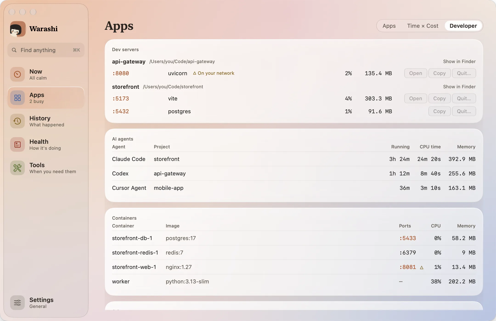

Si vous travaillez avec Claude Code, Codex ou Cursor, Warashi peut les surveiller pour vous : ce que fait chaque session, à quelle distance chacun est de sa limite d’utilisation, et quand l’un a besoin de vous. C’est désactivé tant que vous ne l’activez pas.
- L’activer
Ouvrez Réglages › Agents de code et activez Surveiller Claude Code, Codex et Cursor, ou appuyez sur Activer… sur la carte Agents de code en haut de Apps › Développeur. Warashi demande une fois s’il peut envoyer des notifications.


- Choisir ce dont on vous prévient
Me prévenir quand un agent a besoin de moi (il s’est arrêté pour demander une autorisation ou une réponse), Me prévenir quand un agent termine (après une minute ou plus de travail) et M’avertir près d’une limite (à 80 % et 95 %). Chacun arrive sous forme de notification et ouvre l’encoche quelques secondes. Cliquez sur la notification pour voir vos agents.
- Regardez-les travailler
La carte Agents de code dans Apps › Développeur montre chaque session : au travail, a besoin de vous ou terminée, dans quel projet. Quand l’un travaille, l’encoche indique depuis combien de temps, à la place de ses deux mesures. Ajoutez Agents de code à la fenêtre de la barre des menus dans Réglages › Personnaliser pour voir aussi les limites là, ou choisissez Limite de l’agent de code à côté de l’esprit dans votre barre des menus.


Limites d’utilisation
Chaque limite est un anneau : la limite de 5 heures et la limite hebdomadaire, avec leur réinitialisation. Un anneau devient orange à partir de 80 % et rouge à partir de 95 %.
- Codex écrit ses limites dans ses propres fichiers sur votre Mac ; elles apparaissent donc après la prochaine réponse de Codex.
- Cursor affiche son utilisation mensuelle. Activez Afficher l’utilisation de Cursor ; Warashi la demande à Cursor avec la connexion que l’agent en ligne de commande de Cursor garde dans votre trousseau, donc connectez-vous une fois avec
cursor-agent login. Si macOS le demande, choisissez Toujours autoriser. - Claude Code ne garde pas sa limite sur votre Mac. Activez Afficher la limite d’utilisation de Claude et Warashi la demande à Anthropic, toutes les quelques minutes pendant que Claude Code tourne, avec la connexion propre à Claude Code lue dans votre trousseau. macOS demande une fois si Warashi peut la lire : choisissez Toujours autoriser. La connexion ne sert qu’à cette requête ; elle n’est jamais enregistrée, modifiée ni envoyée ailleurs.
Se connecter à Claude
Sous Afficher la limite d’utilisation de Claude, les Réglages indiquent avec quel compte Claude Code est connecté. Pas connecté ? Se connecter… ouvre la connexion propre à Claude Code dans Terminal, qui vous amène à votre navigateur. Claude Code ne renouvelle sa connexion que pendant que vous l’utilisez, donc après une journée calme la limite peut cesser de se mettre à jour : avec Renouveler la connexion d’elle-même activé, Warashi demande à Claude Code une toute petite réponse de son plus petit modèle, au plus toutes les six heures, et Claude Code renouvelle la connexion. Renouveler le fait tout de suite. Warashi ne renouvelle ni n’écrit jamais lui-même une connexion.
Rester éveillé pendant qu’ils travaillent
Activez Garder mon Mac éveillé pendant qu’un agent travaille dans Réglages › Agents de code, ou Automatiquement › Pendant qu’un agent de code travaille dans Rester éveillé. Votre Mac reste éveillé tant qu’un agent travaille ou vous attend, et pendant trois minutes ensuite. Avec Rester éveillé écran rabattu activé, un MacBook sur son chargeur continue de travailler écran fermé.
Dans le Journal de bord
Un travail de plus de deux minutes est inscrit dans le Journal de bord : « Claude Code a travaillé 1 h 12 min, dans shop ».
Si quelque chose ne va pas
- La limite de Claude indique que la connexion a expiré : lancez Claude Code une fois dans un terminal et il renouvelle sa connexion. Claude Code dans l’app de bureau Claude garde sa connexion ailleurs.
- La limite de Codex n’apparaît pas : elle s’affiche après la prochaine réponse de Codex, d’après la dernière semaine de sessions.
- Cursor ne dit jamais qu’il a besoin de vous : Cursor ne l’enregistre nulle part où Warashi peut lire, donc seuls « au travail » et « terminé » s’affichent pour lui, environ une minute après son arrêt.
- Autres agents : Gemini CLI, Aider et d’autres affichent leur processeur et leur mémoire dans Développeur, sans état « au travail » ou « en attente ».
Plus d’infos dans Dépannage, ou écrivez à adam@warashi.app.